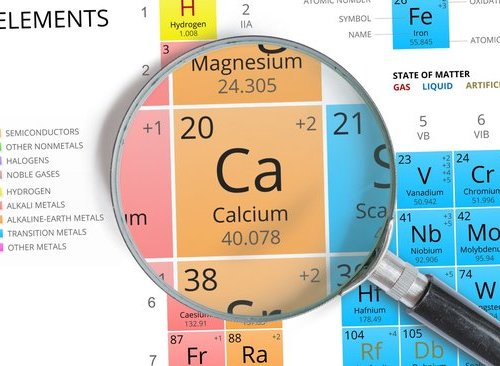
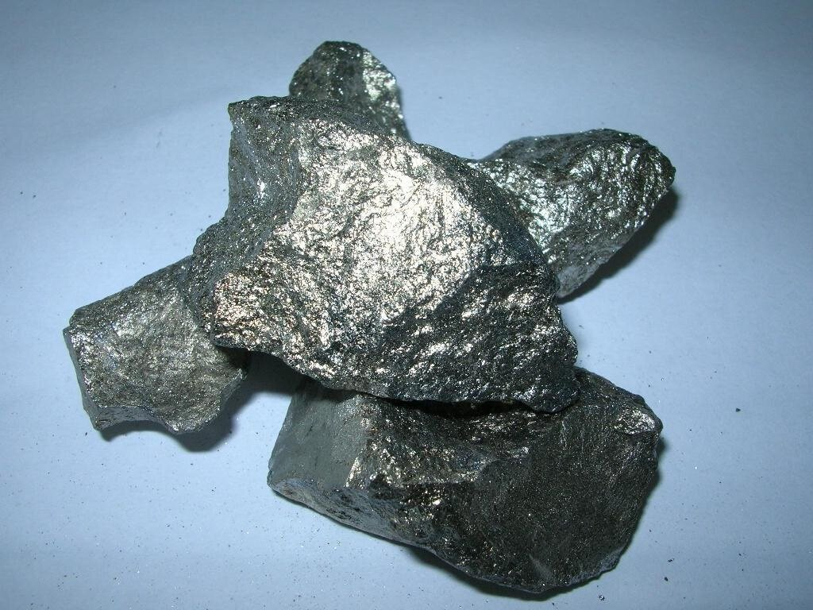

Кальций
Ка́льций (химический символ — Ca, от лат. Calcium) — химический элемент 2-й группы (по устаревшей классификации — главной подгруппы второй группы, IIA) четвёртого периода периодической системы химических элементов Д. И. Менделеева с атомным номером 20.Простое вещество кальций — это умеренно твёрдый[3], очень лёгкий химически активный щёлочноземельный металл серебристо-белого цвета.

Многие природные соединения кальция были известны в глубокой древности и широко применялись в строительстве (например, гипс, известь, мрамор). Металлический кальций впервые выделен Г. Дэви в 1808 г. при электролизе смеси оксидов CaO и HgO и последующем разложении образовавшейся амальгамы кальция. Название происходит от латинского calx (род. падеж calcis) – известь, мягкий камень.
Алюминий – самый распространённый металл и четвёртый по распространённости (после кислорода, водорода и кремния) из всех химических элементов. Содержание в земной коре 8,8 % по массе. Вследствие высокой химической активности в свободном виде не встречается. Известно несколько сотен минералов алюминия, преимущественно алюмосиликатов (нефелин, каолинит и др.). Наиболее богатые алюминием породы (бокситы и др.) являются алюминиевыми рудами.
Содержание кальция в земной коре составляет 3,38 % по массе. Из-за высокой химической активности в свободном состоянии не встречается. Наиболее распространены минералы анортит Ca[Al2Si2O8], ангидрит CaSO4, апатит Ca5(PO4)3(F,Cl,OH), гипс CaSO4·2H2O, кальцит и арагонит CaCO3, перовскит CaTiO3, флюорит CaF2, шеелит CaWO4. Минералы кальция входят в состав осадочных (например, известняк), магматических и метаморфических горных пород. Соединения кальция содержатся в живых организмах: являются основными компонентами костных тканей позвоночных (гидроксиапатит, фторапатит), скелетов кораллов, раковин моллюсков (карбонат и фосфаты кальция) и др. Присутствие ионов Ca2+ определяет жёсткость воды.

Кальций применяют в качестве восстановителя при получении многих металлов (Rb, Cs, Zr, Hf, V и др.). Силициды кальция, а также сплавы кальция с натрием, цинком и другими металлами используют в качестве раскислителей и десульфураторов некоторых сплавов и нефти, для очистки аргона от кислорода и азота, в электровакуумных приборах в качестве поглотителя газов. Хлорид CaCl2 используют в качестве осушителя в химическом синтезе, гипс применяют в медицине. Cиликаты кальция являются основными компонентами цемента.